Cómo Crear una Plantilla Profesional para Grabar Maquetas en FL Studio Utilizando Plugins Nativos
Categoría: Producción Musical & Workflow | Por: RVC Studio
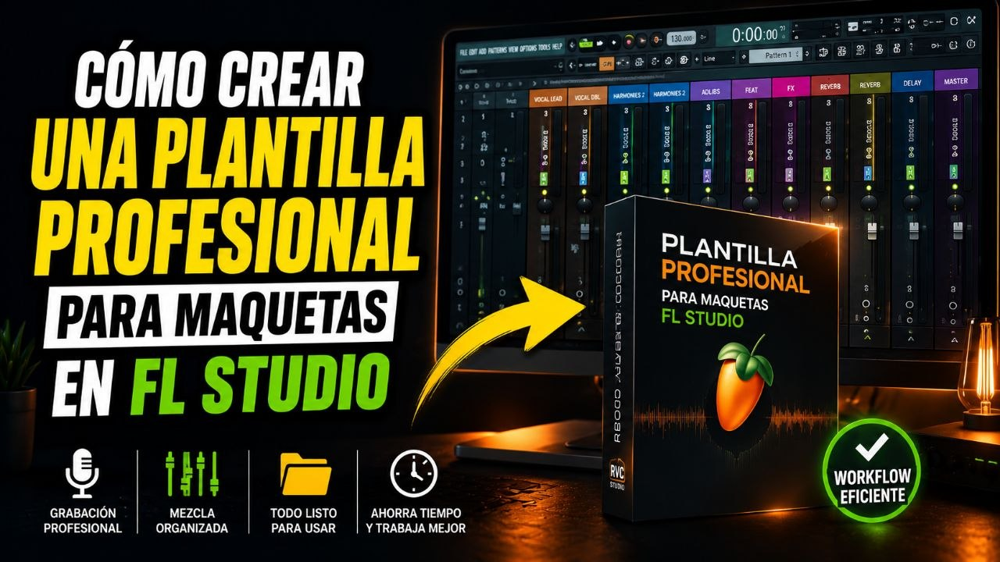
Si buscas agilizar tu flujo de trabajo al grabar voces en FL Studio, contar con una plantilla bien organizada puede marcar una gran diferencia. En este artículo te mostraré cómo configurar una plantilla completa para grabar y mezclar maquetas utilizando únicamente herramientas nativas de FL Studio, logrando un resultado limpio, profesional y eficiente.
Organización Inicial de las Pistas
Lo primero que debemos hacer es configurar correctamente nuestras pistas de audio dentro del proyecto. Comenzamos en el Track 1. Hacemos clic derecho sobre el canal de audio, seleccionamos Track Mode > Audio Track y lo asignamos al primer canal de la Mixer.
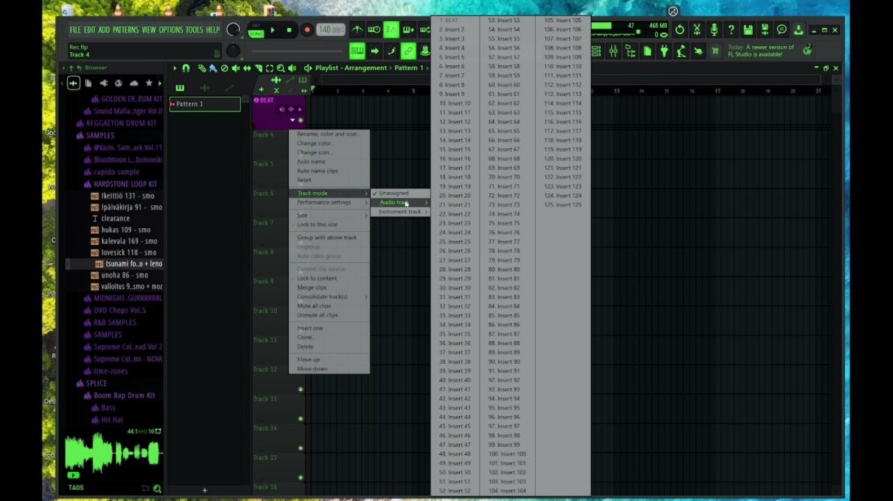
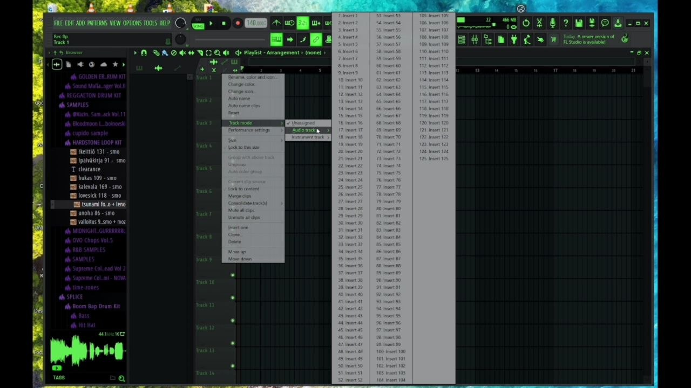
Una vez asignado, renombramos el canal como Beat. Después, manteniendo presionada la tecla Ctrl, seleccionamos dos canales adicionales y los agrupamos debajo del Beat. Estos canales extra nos servirán para realizar posibles arreglos o procesamientos adicionales durante la producción.
A continuación, repetimos este mismo proceso con el resto de las pistas vocales hasta tener una estructura organizada y fácil de manejar. Al finalizar, tendremos todas nuestras pistas correctamente identificadas y ruteadas a sus respectivos canales de la Mixer:
- Beat
- Lead
- Adlibs
- Doubles
- Armónicos
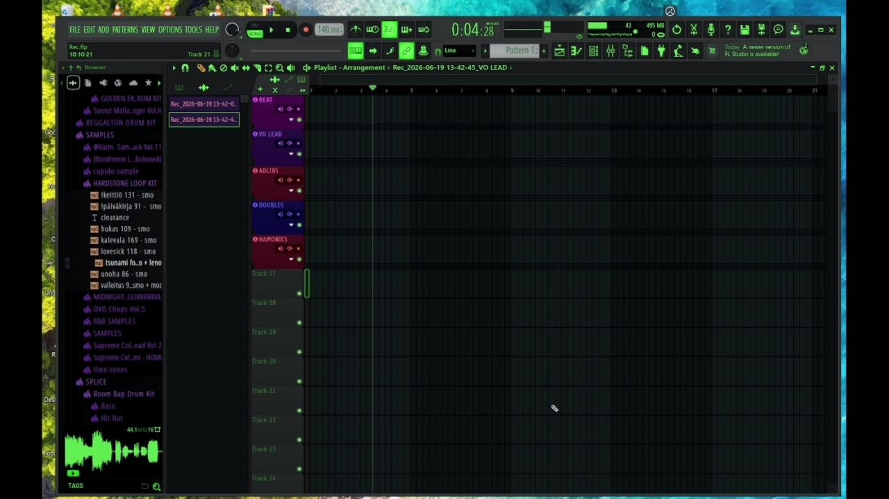
Con la organización lista, podemos comenzar el proceso de mezcla.
Procesamiento del Canal Lead
La voz principal es el elemento más importante de la mezcla, por lo que requiere un procesamiento básico pero efectivo.
1. Puerta de Ruido
El primer plugin que agregamos es una puerta de ruido para eliminar el ruido de fondo cuando no estamos cantando o hablando. Si dispones de plugins de Waves, puedes utilizar NS1. Sin embargo, una excelente alternativa nativa es Fruity Limiter utilizando el preset Noise Gate.
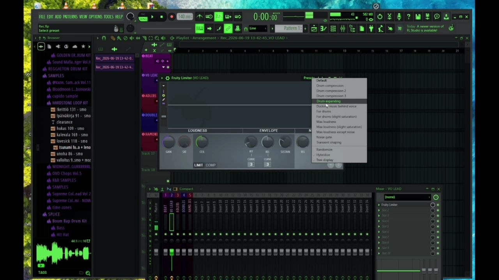
2. Ecualización
Luego agregamos Parametric EQ 2 para limpiar la señal. Aquí realizamos un corte de las frecuencias graves innecesarias y aplicamos un ligero realce en las frecuencias altas para aportar mayor claridad y presencia a la voz.
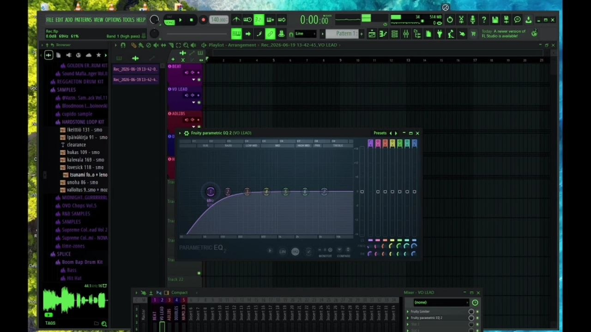
3. Corrección de Afinación
El siguiente paso es añadir Pitcher, el sistema de corrección de tono incluido en FL Studio, equivalente a un Auto-Tune básico.
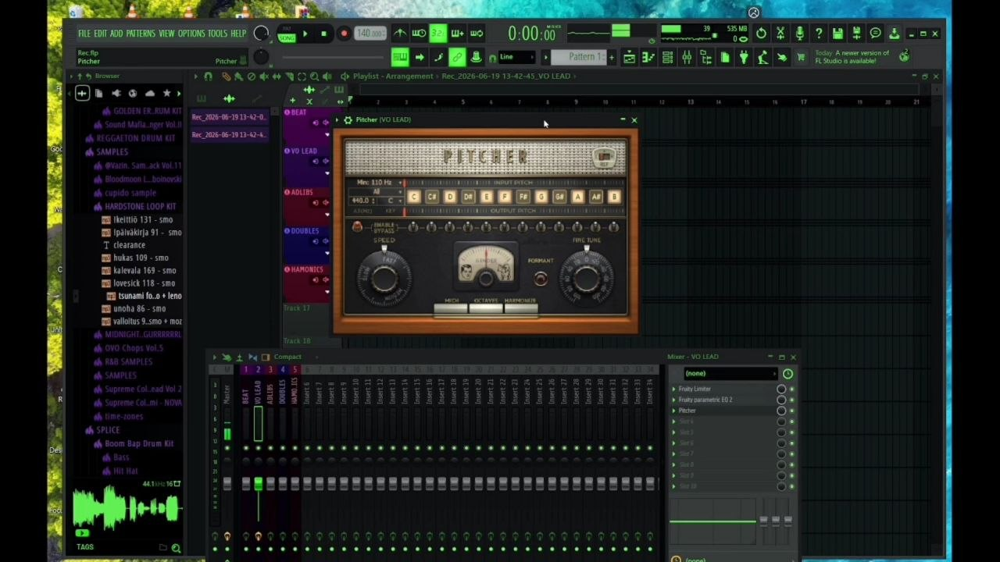
4. Compresión
Para finalizar el procesamiento de este canal, añadimos Fruity Compressor utilizando el preset Brickwall (o alternativamente la sección de compresión de tus herramientas nativas). Este preset ayuda a mantener la voz más estable, controlada y consistente dentro de la mezcla, facilitando que destaque sin perder naturalidad.
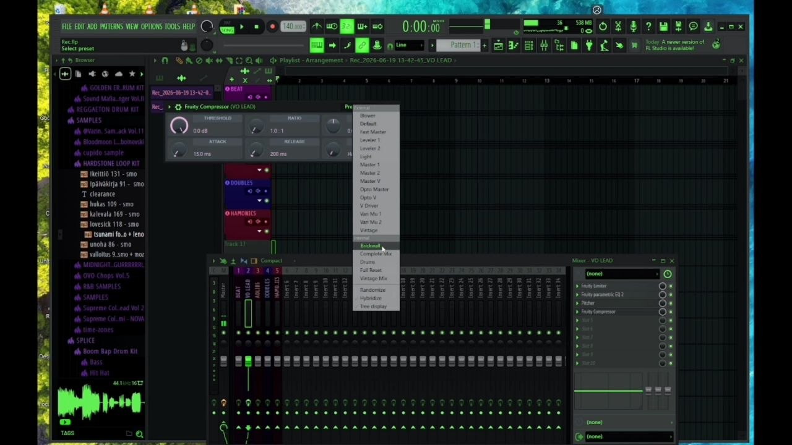
Procesamiento de los Adlibs
Los adlibs suelen utilizarse para complementar la voz principal y aportar movimiento a la canción. Para este canal agregamos Fruity PanOMatic, el plugin de autopan nativo de FL Studio. Esto permite desplazar automáticamente los adlibs dentro del campo estéreo, creando una sensación de amplitud y dinamismo.
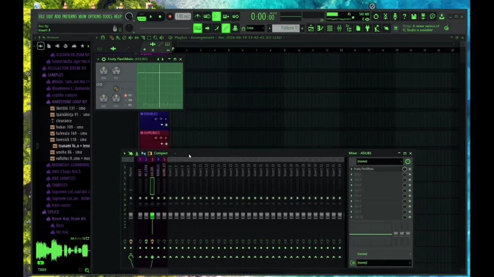
También añadimos Fruity Stereo Shaper para ensanchar la señal y evitar que compita directamente con la voz principal ubicada en el centro de la mezcla.
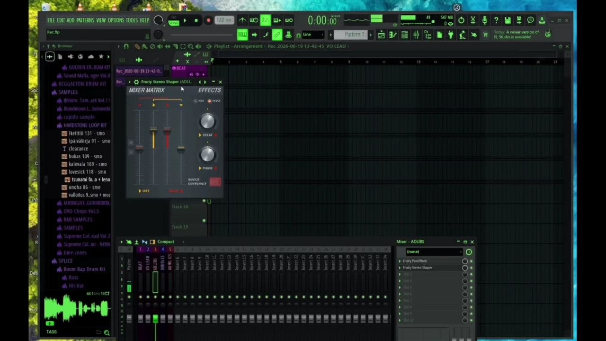
Configuración de los Doubles
Para los doubles normalmente utilizo Doubler 4 de Waves, pero si no dispones de este plugin puedes obtener un resultado similar utilizando herramientas nativas. El procedimiento consiste en utilizar dos canales de la Mixer:
- Panea un canal completamente hacia la izquierda.
- Panea el otro completamente hacia la derecha.
- Desde el canal llamado Doubles, crea un envío hacia cada uno de estos canales.
- Desactiva el envío directo al Master.
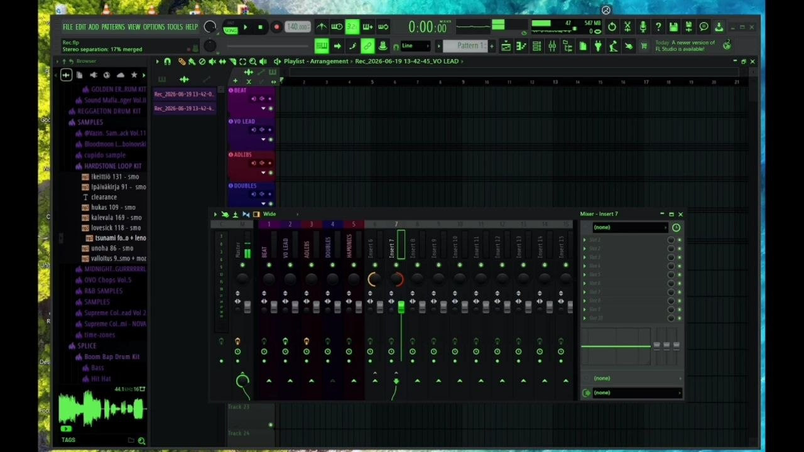
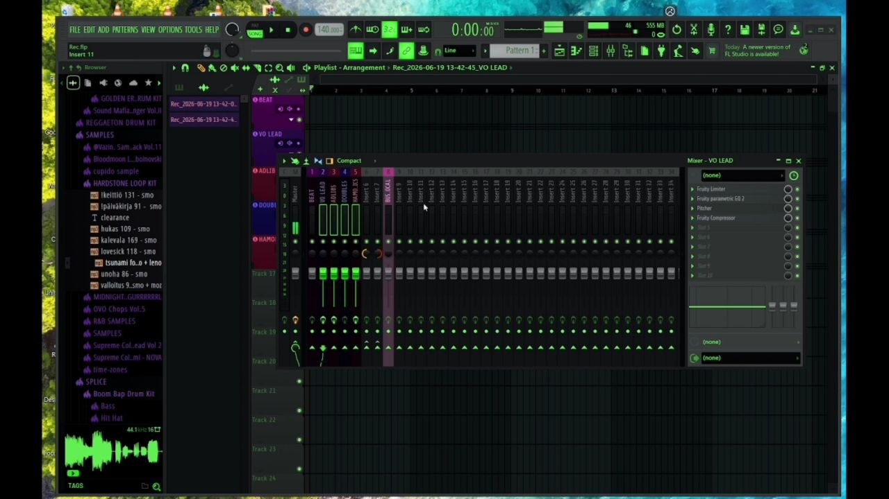
De esta manera, únicamente escucharemos la señal procesada a través de los canales paneados, obteniendo un efecto estéreo amplio y natural.
Procesamiento de los Armónicos
Los armónicos cumplen una función de refuerzo tonal y suelen ocupar frecuencias más agudas dentro de la mezcla. En este canal agregamos de nuevo: Pitcher, Parametric EQ 2 y Fruity Compressor (preset Brickwall).
Dentro de la ecualización eliminamos las frecuencias graves y reducimos parte de las frecuencias medias para dejar espacio a la voz principal y permitir que los armónicos destaquen únicamente en las zonas donde aportan riqueza y brillo. Finalmente, aplicamos nuevamente la compresión con el preset Brickwall para mantener una dinámica uniforme.
Creación del Bus de Voces
Una vez configurados todos los canales vocales, el siguiente paso es crear un Bus de Voces. Seleccionamos todos los canales vocales, excepto el Beat, y utilizamos la opción Route to this track only para enviarlos al bus. Esto nos permitirá controlar y procesar todas las voces desde un único punto dentro de la mezcla.
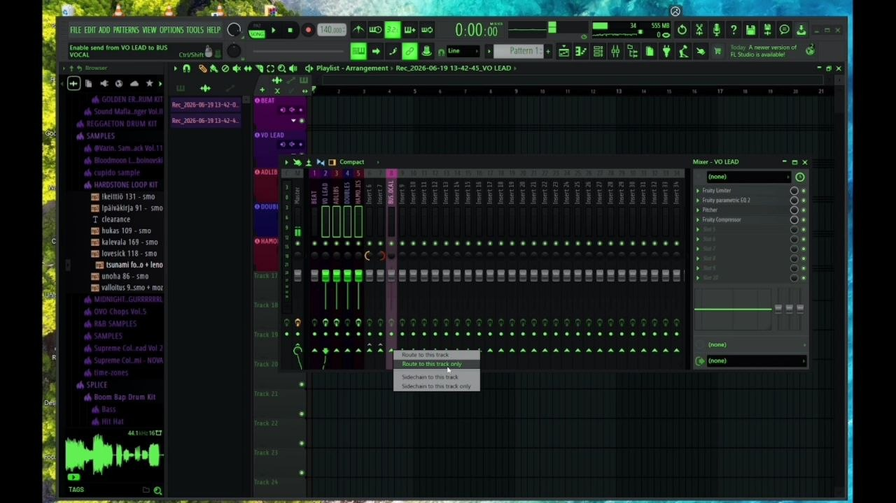
⚠️ Configuración Especial para los Doubles:
En el caso del canal Doubles, debemos desactivar su envío directo al Bus de Voces. Esto se debe a que los canales paneados a izquierda y derecha serán los encargados de enviar la señal al bus. De esta forma evitamos que una copia centrada de la voz interfiera con el efecto estéreo que estamos creando.
Reverb y Delay por Envío
Para obtener una mezcla más limpia y profesional, es recomendable utilizar efectos por envío en lugar de insertarlos directamente en cada canal. Desde el Bus de Voces creamos dos canales auxiliares: Reverb y Delay.
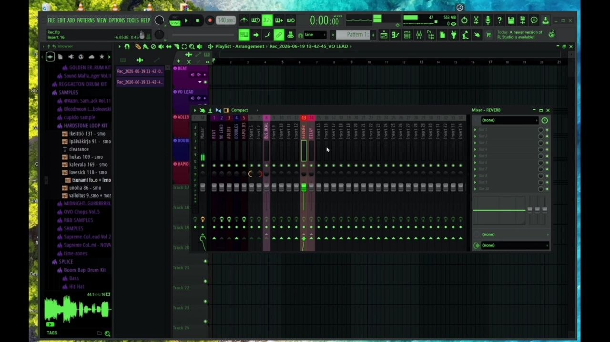
Posteriormente enviamos la cantidad necesaria de señal desde cada pista vocal hacia estos efectos según las necesidades de la canción. Este método proporciona mayor control, reduce el consumo de recursos y genera una sensación de cohesión entre todas las voces.
Conclusión
Esta plantilla está diseñada para grabar y mezclar maquetas de forma rápida utilizando exclusivamente plugins nativos de FL Studio. Gracias a una correcta organización de las pistas, un procesamiento básico bien aplicado y una estructura eficiente de buses y envíos, podrás obtener resultados mucho más profesionales sin necesidad de plugins externos.
Lo mejor de todo es que esta configuración puede servir como punto de partida para cualquier género musical, permitiéndote concentrarte más en la interpretación y menos en la configuración técnica. Si utiliza esta plantilla como base, tendrás un flujo de trabajo más rápido, ordenado y preparado para producir maquetas con una calidad superior.
💡 Guarda tu proyecto como Plantilla (Template):
Una vez que dejes todo esto configurado, ve a File > Save as y guárdalo dentro de la carpeta de Templates de FL Studio. Así, cada vez que abras el programa para una nueva sesión, podrás cargar este esqueleto al instante en un segundo y ponerte a grabar de inmediato.
¿Te gusta nuestro contenido técnico?
Sigue a RVC Studio en Google News para no perderte ningún tutorial de producción musical.